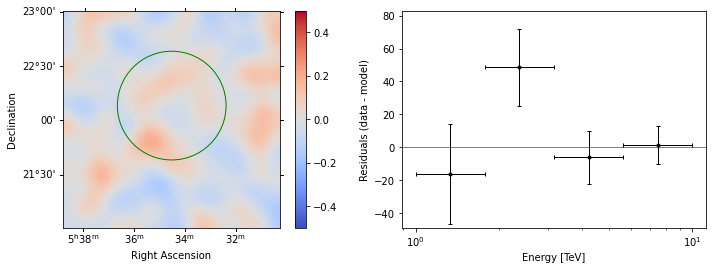
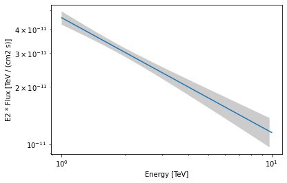
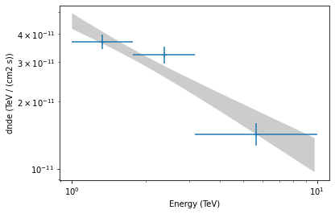

This is a fixed-text formatted version of a Jupyter notebook
Try online

You may download all the notebooks in the documentation as a tar file.
Source files: analysis_2.ipynb | analysis_2.py
Low level API¶
Prerequisites:¶
Understanding the gammapy data workflow, in particular what are DL3 events and intrument response functions (IRF).
Understanding of the data reduction and modeling fitting process as shown in the analysis with the high level interface tutorial
Context¶
This notebook is an introduction to gammapy analysis this time using the lower level classes and functions the library. This allows to understand what happens during two main gammapy analysis steps, data reduction and modeling/fitting.
Objective: Create a 3D dataset of the Crab using the H.E.S.S. DL3 data release 1 and perform a simple model fitting of the Crab nebula using the lower level gammapy API.
Proposed approach:¶
Here, we have to interact with the data archive (with the gammapy.data.DataStore) to retrieve a list of selected observations (gammapy.data.Observations). Then, we define the geometry of the gammapy.datasets.MapDataset object we want to produce and the maker object that reduce an observation to a dataset.
We can then proceed with data reduction with a loop over all selected observations to produce datasets in the relevant geometry and stack them together (i.e. sum them all).
In practice, we have to: - Create a gammapy.data.DataStore poiting to the relevant data - Apply an observation selection to produce a list of observations, a gammapy.data.Observations object. - Define a geometry of the Map we want to produce, with a sky projection and an energy range. - Create a gammapy.maps.MapAxis for the energy - Create a gammapy.maps.WcsGeom for the geometry - Create the necessary makers : - the map dataset maker : gammapy.makers.MapDatasetMaker -
the background normalization maker, here a gammapy.makers.FoVBackgroundMaker - and usually the safe range maker : gammapy.makers.SafeRangeMaker - Perform the data reduction loop. And for every observation: - Apply the makers sequentially to produce the current gammapy.datasets.MapDataset - Stack it on the target one. - Define the gammapy.modeling.models.SkyModel to apply to the dataset. - Create a gammapy.modeling.Fit object and run it to fit the model parameters - Apply
a gammapy.estimators.FluxPointsEstimator to compute flux points for the spectral part of the fit.
Setup¶
First, we setup the analysis by performing required imports.
[1]:
%matplotlib inline
import matplotlib.pyplot as plt
[2]:
from pathlib import Path
from astropy import units as u
from astropy.coordinates import SkyCoord
from regions import CircleSkyRegion
[3]:
from gammapy.data import DataStore
from gammapy.datasets import MapDataset
from gammapy.maps import WcsGeom, MapAxis, Map
from gammapy.makers import MapDatasetMaker, SafeMaskMaker, FoVBackgroundMaker
from gammapy.modeling.models import (
SkyModel,
PowerLawSpectralModel,
PointSpatialModel,
FoVBackgroundModel,
)
from gammapy.modeling import Fit
from gammapy.estimators import FluxPointsEstimator
Defining the datastore and selecting observations¶
We first use the gammapy.data.DataStore object to access the observations we want to analyse. Here the H.E.S.S. DL3 DR1.
[4]:
data_store = DataStore.from_dir("$GAMMAPY_DATA/hess-dl3-dr1")
We can now define an observation filter to select only the relevant observations. Here we use a cone search which we define with a python dict.
We then filter the ObservationTable with gammapy.data.ObservationTable.select_observations().
[5]:
selection = dict(
type="sky_circle",
frame="icrs",
lon="83.633 deg",
lat="22.014 deg",
radius="5 deg",
)
selected_obs_table = data_store.obs_table.select_observations(selection)
We can now retrieve the relevant observations by passing their obs_id to thegammapy.data.DataStore.get_observations() method.
[6]:
observations = data_store.get_observations(selected_obs_table["OBS_ID"])
Preparing reduced datasets geometry¶
Now we define a reference geometry for our analysis, We choose a WCS based geometry with a binsize of 0.02 deg and also define an energy axis:
[7]:
energy_axis = MapAxis.from_energy_bounds(1.0, 10.0, 4, unit="TeV")
geom = WcsGeom.create(
skydir=(83.633, 22.014),
binsz=0.02,
width=(2, 2),
frame="icrs",
proj="CAR",
axes=[energy_axis],
)
# Reduced IRFs are defined in true energy (i.e. not measured energy).
energy_axis_true = MapAxis.from_energy_bounds(
0.5, 20, 10, unit="TeV", name="energy_true"
)
Now we can define the target dataset with this geometry.
[8]:
stacked = MapDataset.create(
geom=geom, energy_axis_true=energy_axis_true, name="crab-stacked"
)
Data reduction¶
Create the maker classes to be used¶
The gammapy.datasets.MapDatasetMaker object is initialized as well as the gammapy.makers.SafeMaskMaker that carries here a maximum offset selection.
[9]:
offset_max = 2.5 * u.deg
maker = MapDatasetMaker()
maker_safe_mask = SafeMaskMaker(methods=["offset-max"], offset_max=offset_max)
[10]:
circle = CircleSkyRegion(
center=SkyCoord("83.63 deg", "22.14 deg"), radius=0.2 * u.deg
)
exclusion_mask = ~geom.region_mask(regions=[circle])
maker_fov = FoVBackgroundMaker(method="fit", exclusion_mask=exclusion_mask)
Perform the data reduction loop¶
[11]:
%%time
for obs in observations:
# First a cutout of the target map is produced
cutout = stacked.cutout(
obs.pointing_radec, width=2 * offset_max, name=f"obs-{obs.obs_id}"
)
# A MapDataset is filled in this cutout geometry
dataset = maker.run(cutout, obs)
# The data quality cut is applied
dataset = maker_safe_mask.run(dataset, obs)
# fit background model
dataset = maker_fov.run(dataset)
print(
f"Background norm obs {obs.obs_id}: {dataset.background_model.spectral_model.norm.value:.2f}"
)
# The resulting dataset cutout is stacked onto the final one
stacked.stack(dataset)
Background norm obs 23523: 0.99
Background norm obs 23526: 1.08
Background norm obs 23559: 0.99
Background norm obs 23592: 1.10
CPU times: user 2.93 s, sys: 59.3 ms, total: 2.99 s
Wall time: 2.99 s
[12]:
print(stacked)
MapDataset
----------
Name : crab-stacked
Total counts : 2479
Total background counts : 2112.97
Total excess counts : 366.03
Predicted counts : 2112.97
Predicted background counts : 2112.97
Predicted excess counts : nan
Exposure min : 3.75e+08 m2 s
Exposure max : 3.48e+09 m2 s
Number of total bins : 40000
Number of fit bins : 40000
Fit statistic type : cash
Fit statistic value (-2 log(L)) : nan
Number of models : 0
Number of parameters : 0
Number of free parameters : 0
Inspect the reduced dataset¶
[13]:
stacked.counts.sum_over_axes().smooth(0.05 * u.deg).plot(
stretch="sqrt", add_cbar=True
);
[13]:
(<Figure size 432x288 with 2 Axes>,
<WCSAxesSubplot:xlabel='Right Ascension', ylabel='Declination'>,
<matplotlib.colorbar.Colorbar at 0x7fa28c4a2160>)

Save dataset to disk¶
It is common to run the preparation step independent of the likelihood fit, because often the preparation of maps, PSF and energy dispersion is slow if you have a lot of data. We first create a folder:
[14]:
path = Path("analysis_2")
path.mkdir(exist_ok=True)
And then write the maps and IRFs to disk by calling the dedicated gammapy.datasets.MapDataset.write() method:
[15]:
filename = path / "crab-stacked-dataset.fits.gz"
stacked.write(filename, overwrite=True)
Define the model¶
We first define the model, a SkyModel, as the combination of a point source SpatialModel with a powerlaw SpectralModel:
[16]:
target_position = SkyCoord(ra=83.63308, dec=22.01450, unit="deg")
spatial_model = PointSpatialModel(
lon_0=target_position.ra, lat_0=target_position.dec, frame="icrs"
)
spectral_model = PowerLawSpectralModel(
index=2.702,
amplitude=4.712e-11 * u.Unit("1 / (cm2 s TeV)"),
reference=1 * u.TeV,
)
sky_model = SkyModel(
spatial_model=spatial_model, spectral_model=spectral_model, name="crab"
)
bkg_model = FoVBackgroundModel(dataset_name="crab-stacked")
Now we assign this model to our reduced dataset:
[17]:
stacked.models = [sky_model, bkg_model]
Fit the model¶
The gammapy.modeling.Fit class is orchestrating the fit, connecting the stats method of the dataset to the minimizer. By default, it uses iminuit.
Its contructor takes a list of dataset as argument.
[18]:
%%time
fit = Fit([stacked])
result = fit.run(optimize_opts={"print_level": 1})
┌──────────────────────────────────┬──────────────────────────────────────┐
│ FCN = 1.624e+04 │ Nfcn = 146 (146 total) │
│ EDM = 9.01e-06 (Goal: 0.0002) │ │
├───────────────┬──────────────────┼──────────────────────────────────────┤
│ Valid Minimum │ Valid Parameters │ No Parameters at limit │
├───────────────┴──────────────────┼──────────────────────────────────────┤
│ Below EDM threshold (goal x 10) │ Below call limit │
├───────────────┬──────────────────┼───────────┬─────────────┬────────────┤
│ Hesse ok │ Has Covariance │ Accurate │ Pos. def. │ Not forced │
└───────────────┴──────────────────┴───────────┴─────────────┴────────────┘
CPU times: user 6.82 s, sys: 416 ms, total: 7.24 s
Wall time: 7.25 s
The FitResult contains information on the fitted parameters.
[19]:
result.parameters.to_table()
[19]:
| type | name | value | unit | min | max | frozen | error |
|---|---|---|---|---|---|---|---|
| str8 | str9 | float64 | str14 | float64 | float64 | bool | float64 |
| spectral | index | 2.5995e+00 | nan | nan | False | 1.004e-01 | |
| spectral | amplitude | 4.5877e-11 | cm-2 s-1 TeV-1 | nan | nan | False | 3.700e-12 |
| spectral | reference | 1.0000e+00 | TeV | nan | nan | True | 0.000e+00 |
| spatial | lon_0 | 8.3619e+01 | deg | nan | nan | False | 3.107e-03 |
| spatial | lat_0 | 2.2024e+01 | deg | -9.000e+01 | 9.000e+01 | False | 2.959e-03 |
| spectral | norm | 9.3482e-01 | nan | nan | False | 2.192e-02 | |
| spectral | tilt | 0.0000e+00 | nan | nan | True | 0.000e+00 | |
| spectral | reference | 1.0000e+00 | TeV | nan | nan | True | 0.000e+00 |
Inspecting residuals¶
For any fit it is useful to inspect the residual images. We have a few options on the dataset object to handle this. First we can use .plot_residuals_spatial() to plot a residual image, summed over all energies:
[20]:
stacked.plot_residuals_spatial(method="diff/sqrt(model)", vmin=-0.5, vmax=0.5);
/usr/share/miniconda/envs/gammapy-dev/lib/python3.7/site-packages/astropy/visualization/wcsaxes/core.py:211: MatplotlibDeprecationWarning: Passing parameters norm and vmin/vmax simultaneously is deprecated since 3.3 and will become an error two minor releases later. Please pass vmin/vmax directly to the norm when creating it.
return super().imshow(X, *args, origin=origin, **kwargs)
[20]:
<WCSAxesSubplot:xlabel='Right Ascension', ylabel='Declination'>

In addition, we can also specify a region in the map to show the spectral residuals:
[21]:
region = CircleSkyRegion(
center=SkyCoord("83.63 deg", "22.14 deg"), radius=0.5 * u.deg
)
[22]:
stacked.plot_residuals(
kwargs_spatial=dict(method="diff/sqrt(model)", vmin=-0.5, vmax=0.5),
kwargs_spectral=dict(region=region),
);
/usr/share/miniconda/envs/gammapy-dev/lib/python3.7/site-packages/astropy/visualization/wcsaxes/core.py:211: MatplotlibDeprecationWarning: Passing parameters norm and vmin/vmax simultaneously is deprecated since 3.3 and will become an error two minor releases later. Please pass vmin/vmax directly to the norm when creating it.
return super().imshow(X, *args, origin=origin, **kwargs)
[22]:
(<WCSAxesSubplot:xlabel='Right Ascension', ylabel='Declination'>,
<AxesSubplot:xlabel='Energy [TeV]', ylabel='Residuals (data - model)'>)

We can also directly access the .residuals() to get a map, that we can plot interactively:
[23]:
residuals = stacked.residuals(method="diff")
residuals.smooth("0.08 deg").plot_interactive(
cmap="coolwarm", vmin=-0.2, vmax=0.2, stretch="linear", add_cbar=True
);
Plot the fitted spectrum¶
Making a butterfly plot¶
The SpectralModel component can be used to produce a, so-called, butterfly plot showing the enveloppe of the model taking into account parameter uncertainties:
[24]:
spec = sky_model.spectral_model
Now we can actually do the plot using the plot_error method:
[25]:
energy_range = [1, 10] * u.TeV
spec.plot(energy_range=energy_range, energy_power=2)
ax = spec.plot_error(energy_range=energy_range, energy_power=2)

Computing flux points¶
We can now compute some flux points using the gammapy.estimators.FluxPointsEstimator.
Besides the list of datasets to use, we must provide it the energy intervals on which to compute flux points as well as the model component name.
[26]:
energy_edges = [1, 2, 4, 10] * u.TeV
fpe = FluxPointsEstimator(energy_edges=energy_edges, source="crab")
[27]:
%%time
flux_points = fpe.run(datasets=[stacked])
CPU times: user 3.86 s, sys: 120 ms, total: 3.98 s
Wall time: 3.98 s
[28]:
ax = spec.plot_error(energy_range=energy_range, energy_power=2)
flux_points.plot(ax=ax, energy_power=2)
/home/runner/work/gammapy-docs/gammapy-docs/gammapy/gammapy/estimators/flux_point.py:667: MatplotlibDeprecationWarning: The 'nonposx' parameter of __init__() has been renamed 'nonpositive' since Matplotlib 3.3; support for the old name will be dropped two minor releases later.
ax.set_xscale("log", nonposx="clip")
/home/runner/work/gammapy-docs/gammapy-docs/gammapy/gammapy/estimators/flux_point.py:668: MatplotlibDeprecationWarning: The 'nonposy' parameter of __init__() has been renamed 'nonpositive' since Matplotlib 3.3; support for the old name will be dropped two minor releases later.
ax.set_yscale("log", nonposy="clip")
[28]:
<AxesSubplot:xlabel='Energy (TeV)', ylabel='dnde (TeV / (cm2 s))'>

[ ]: